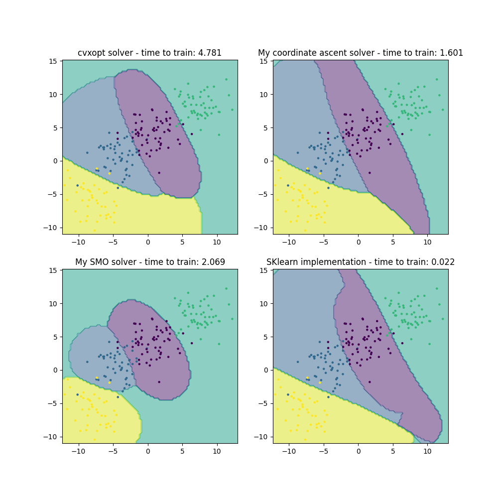

Note
Go to the end to download the full example code.
Support Vector Classifier Solver Comparison
This script compares the performance of different Support Vector Machine (SVM) solvers on a synthetic 2D classification dataset. The solvers compared include:
CVXOPT Solver: Custom SVM optimization using the CVXOPT library.
SMO Solver: Custom implementation of the Sequential Minimal Optimization (SMO) algorithm.
Coordinate Ascent Solver: Custom implementation of the coordinate ascent optimization method for SVM.
Scikit-learn SVM: Standard implementation from the Scikit-learn library.
The performance is evaluated based on prediction accuracy and training time. Visualizations of decision boundaries learned by each solver on the test set are provided for comparison.
0.935
0.905
0.935
0.94
import torch
import matplotlib.pyplot as plt
from sklearn import datasets
from time import perf_counter
from sklearn import svm
from DLL.MachineLearning.SupervisedLearning.SupportVectorMachines import SVC
from DLL.MachineLearning.SupervisedLearning import Kernels
from DLL.Data.Preprocessing import data_split
from DLL.Data.Metrics import accuracy
X, y = datasets.make_blobs(n_samples=1000, n_features=2, cluster_std=2, centers=4, random_state=3)
# plt.scatter(X[:, 0], X[:, 1], c=y, s=5)
# plt.show()
X = torch.from_numpy(X)
y = torch.from_numpy(y)
X_train, y_train, X_test, y_test, _, _ = data_split(X, y)
model1 = SVC(kernel=Kernels.RBF(correlation_length=5), C=1, opt_method="cvxopt")
start1 = perf_counter()
model1.fit(X_train, y_train, epochs=2, multi_method="ovr")
end1 = perf_counter()
predictions = model1.predict(X_test)
print(round(accuracy(predictions, y_test), 3))
n = 100
x_min, X_max = X[:, 0].min(), X[:, 0].max()
y_min, y_max = X[:, 1].min(), X[:, 1].max()
x_grid = torch.linspace(x_min, X_max, n)
y_grid = torch.linspace(y_min, y_max, n)
Xv, Yv = torch.meshgrid(x_grid, y_grid, indexing="ij")
X_grid = torch.stack((Xv.flatten(), Yv.flatten()), dim=1).to(X.dtype)
grid_predictions = model1.predict(X_grid).reshape((n, n))
model2 = SVC(kernel=Kernels.RBF(correlation_length=5), C=1, opt_method="smo")
start2 = perf_counter()
model2.fit(X_train, y_train, epochs=5, multi_method="ovr")
end2 = perf_counter()
predictions = model2.predict(X_test)
print(round(accuracy(predictions, y_test), 3))
x_min, X_max = X[:, 0].min(), X[:, 0].max()
y_min, y_max = X[:, 1].min(), X[:, 1].max()
x_grid = torch.linspace(x_min, X_max, n)
y_grid = torch.linspace(y_min, y_max, n)
Xv, Yv = torch.meshgrid(x_grid, y_grid, indexing="ij")
X_grid = torch.stack((Xv.flatten(), Yv.flatten()), dim=1).to(X.dtype)
grid_predictions2 = model2.predict(X_grid).reshape((n, n))
model3 = SVC(kernel=Kernels.RBF(correlation_length=5), C=1, opt_method="coord_ascent")
start3 = perf_counter()
model3.fit(X_train, y_train, epochs=5, multi_method="ovr")
end3 = perf_counter()
predictions = model3.predict(X_test)
print(round(accuracy(predictions, y_test), 3))
x_min, X_max = X[:, 0].min(), X[:, 0].max()
y_min, y_max = X[:, 1].min(), X[:, 1].max()
x_grid = torch.linspace(x_min, X_max, n)
y_grid = torch.linspace(y_min, y_max, n)
Xv, Yv = torch.meshgrid(x_grid, y_grid, indexing="ij")
X_grid = torch.stack((Xv.flatten(), Yv.flatten()), dim=1).to(X.dtype)
grid_predictions3 = model3.predict(X_grid).reshape((n, n))
model4 = svm.SVC(kernel="rbf", C=1, gamma=1/(2 * 5 ** 2), decision_function_shape='ovr')
start4 = perf_counter()
model4.fit(X_train, y_train)
end4 = perf_counter()
predictions = model4.predict(X_test)
print(round(accuracy(torch.from_numpy(predictions), y_test), 3))
x_min, X_max = X[:, 0].min(), X[:, 0].max()
y_min, y_max = X[:, 1].min(), X[:, 1].max()
x_grid = torch.linspace(x_min, X_max, n)
y_grid = torch.linspace(y_min, y_max, n)
Xv, Yv = torch.meshgrid(x_grid, y_grid, indexing="ij")
X_grid = torch.stack((Xv.flatten(), Yv.flatten()), dim=1).to(X.dtype)
grid_predictions4 = model4.predict(X_grid).reshape((n, n))
fig, axes = plt.subplots(2, 2, figsize=(10, 10))
axes[0, 0].contourf(Xv.numpy(), Yv.numpy(), grid_predictions.numpy(), alpha=0.5)
axes[1, 0].contourf(Xv.numpy(), Yv.numpy(), grid_predictions2.numpy(), alpha=0.5)
axes[0, 1].contourf(Xv.numpy(), Yv.numpy(), grid_predictions3.numpy(), alpha=0.5)
axes[1, 1].contourf(Xv.numpy(), Yv.numpy(), grid_predictions4, alpha=0.5)
axes[0, 0].scatter(X_test[:, 0], X_test[:, 1], c=y_test, s=5)
axes[0, 1].scatter(X_test[:, 0], X_test[:, 1], c=y_test, s=5)
axes[1, 0].scatter(X_test[:, 0], X_test[:, 1], c=y_test, s=5)
axes[1, 1].scatter(X_test[:, 0], X_test[:, 1], c=y_test, s=5)
axes[0, 0].set_title(f"cvxopt solver - time to train: {round(end1 - start1, 3)}")
axes[1, 0].set_title(f"My SMO solver - time to train: {round(end2 - start2, 3)}")
axes[0, 1].set_title(f"My coordinate ascent solver - time to train: {round(end3 - start3, 3)}")
axes[1, 1].set_title(f"SKlearn implementation - time to train: {round(end4 - start4, 3)}")
plt.show()
Total running time of the script: (0 minutes 14.053 seconds)